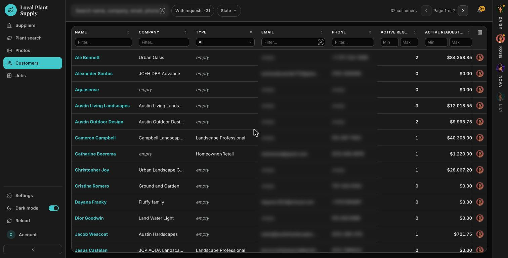

Suppliers, plants and catalogue
The catalogue is LPS's record of who sells plants and what they list. It holds every nursery and grower with its farms and contacts, every plant on their price lists with size and price, a photo library and the customer list. Plant search finds a plant however it is spelled, and Daisy, the supplier agent, loads each new supplier list so the catalogue stays current.
In short
- Suppliers are companies with farms. A supplier with several sites is one company with several locations ("farms"). One of them is the head branch. Stock, prices and pickup belong to a farm, but the app lists suppliers one row per company.
- Every plant a supplier lists is one inventory row. A row records the plant's common name, botanical name and cultivar, the container size as printed plus a standard size bucket, price, quantity, dimensions, and notes. Each row also records which supplier file it came from.
- A listing is not stock. A price list shows what a supplier offered on a date. It does not prove the plant is in stock. LPS confirms stock with an availability request.
- Plant search is forgiving. It matches common names, botanical names and known aliases, tolerates typos and partial words, and puts the size you type at the top of the results. Wrap a phrase in double quotes for an exact match.
- Photos and customers live alongside the catalogue. The Photos page is a searchable library of reference pictures. The Customers page lists the people and companies that send LPS jobs.
- Daisy keeps it current. Suppliers email their lists. Daisy reads each list, matches every line to the existing rows, updates what changed, adds new plants, records where the data came from and reports the results. She creates suppliers, farms and contacts herself, but she emails a supplier only after Chris (or the developer) approves the exact draft.
Sources: casestudy.md, docs/app/README.md ("Companies and farms", "Search"), harness/agents/daisy/system_prompts/1-agent.md, harness/agents/rosie/system_prompts/1-agent.md
Supplier companies and farms
Many nurseries run more than one site. LPS records each site as its own supplier location, because each one has its own stock, prices, pickup address and often its own contacts. The locations of one company are tied to a single head branch, which is usually the head office. A supplier with only one site is its own head branch.
Most of the app presents the company, and shows the farm where it matters:
| Screen | What one entry is | Where the farm still shows |
|---|---|---|
| Suppliers list | One row per company (the head branch's own record) | A chevron expands the company's matching farms as full rows ("2 of 5 farms"). |
| Plant search | One card per company | The Branch column on every plant row. |
| Supplier profile opened on the head branch | One page for the whole company | Entries in each tab are tagged with their farm; the Farms tab edits each one. |
| Supplier profile opened on a farm | That farm alone | The page is the farm, with a link up to the company. |
A few things follow from this:
- The head office is a real row, not a summary. Its name, address, website and contacts are its own. Only the item count and the ingestion dates on the Suppliers list add up all of the company's farms, because a head office often holds no stock of its own.
- A company appears when any of its farms matches. Searching for a farm's town shows the company, with only that farm listed under it. So after a city filter, the company row's own City can differ from the city you picked.
- Portal logins belong to the company. A supplier partner signs in once and sees all of the company's farms. The LPS Partner tag is set automatically while the company has at least one portal login (see Supplier portal and public links).
- Linking or merging companies is Chris's call. Daisy adds a new farm under an existing company when the evidence is clear. When two records look like one company, she flags it for Chris and does not link them herself.
What a supplier record holds
| Field (label in the app) | What it means |
|---|---|
| Name, street address, city, state, ZIP | The location's own details. Coordinates, when known, power the map button on phones. |
| Type | One of Grower Wholesale Supplier Retail Broker/Platform, or blank. Blank means there isn't enough evidence yet. The type is never guessed from the name. |
| Website | Usually stored as a bare domain and opened over https. Read-only on the profile. |
| Availability source | Email (the supplier sends lists) or Hosted (the supplier publishes a list on a web page). Blank is a to-do: nobody has established it yet. |
| Update every (days) | How often the list usually refreshes, in whole days (7 = weekly). |
| Hosted availability | The web page a hosted list lives on. |
| LPS Partner | Read-only. On while the company has at least one portal login. |
| Short name | An optional short code in the database, for example APS for Austin Plant Supply and LPS for Local Plant Supply. The app doesn't show it. |
| Notes | Durable facts about the supplier: quirks, preferences and ordering constraints. Not contact history and never people's names, emails or phone numbers. |
| Agent threads | The supplier's chat thread with Daisy (catalogue work) and with Rosie (jobs, availability requests and orders). All farms of a company share the head branch's threads. |
How companies and farms are stored
- Table
suppliers: one row per location.head_branch_idisNOT NULLand points at the head row. A head branch points at itself, and a chain is impossible: theset_head_branchtrigger (suppliers_head_branch(), migration 0049) fills the self-reference on insert, refuses a branch that points at another branch, and refuses demoting a head that still has locations. This replaced the earliersupplier_groupstable. categoryCHECK:Grower,Wholesale Supplier,Retail,Broker/Platform, or NULL (0067). App constantSUPPLIER_CATEGORIESinapp/lib/columns.ts.availability_source_typeCHECKEmail|Hosted(0018);availability_update_daysCHECK> 0;hosted_availability_urlis deliberately not tied toHostedby a constraint.is_lps_partneris derived. Triggerapp_users_sync_lps_partnersets it on the head branch with the firstpartnerlogin and clears it with the last. Triggerapp_users_parent_supplierrejects a login attached to a branch id. Nothing in the app writes the column.daisy_thread_idandrosie_thread_idhold the samesupplier-<slug of the head-branch name>value; a new location copies its head branch's values. The derived*_thread_refforeign keys tothreadsare maintained by thesuppliers_link_threadstrigger.suppliers.communication_notesis a frozen archive from before migration 0063. No screen shows it and the app never writes it (it is left out ofWRITABLE.suppliers).- The profile is read by
getSupplierProfile(id)inapp/lib/queries.ts. On a head-branch id its scope is every active location plus the head; on a farm id it is that farm alone. Becausehead_branch_idnever chains, one equality on it selects the whole company.
Sources: docs/app/README.md ("Companies and farms", "Availability source", "Portal access"), docs/supabase-schema.md (suppliers), harness/agents/daisy/migrations/0049_supplier_head_branch.sql, app/lib/queries.ts, app/lib/columns.ts
The Suppliers list
Suppliers is the first item in the app's navigation and the page the installed app opens on. It lists one row per company.
- Search ("Search name, contact, email, city…") matches supplier names and details, and also the name, email, phone or title of any linked contact. It is typo tolerant, like plant search.
- Filters: quick Type and State multiselects, and an Advanced filters panel with Name contains, City and an LPS Partner toggle (LPS Partners / Not partners). Column headers add their own filters, for example State, Availability source and Update every.
- Columns shown by default: name, Category (the supplier type), state, inventory sources, item count (# Items), website and primary contact. The column picker adds the rest, such as Primary email, Primary phone, Other contacts, Last ingestion and the availability-source fields. Order, visibility and widths are remembered on each device.
- Sorting by a column header sorts the whole result, not only the page on screen.
- Agent buttons: each company row has a Rosie and a Daisy button that open that supplier's chat thread with the agent.
- Hide until refresh: a company or farm can be hidden from the current view and restored from the footer. This doesn't change any data.
- Paging: 50 companies per page on desktop. Phones show cards with name, partner tag, city and state, item count, type, primary contact and last ingestion, and a Load 50 more button.
- Many fields, such as the availability-source fields, can be edited in place in the table.
![The Suppliers list in dark mode. Across the top are a search box, Supplier type and State filters, an advanced-filters button, and a counter reading 50/1339 companies with Page 1 of 27 and previous and next arrows. The table has columns Name, Category, State, Inventory sources, item count, Website and Primary contact. Category shows badges such as Grower and Wholesale Supplier, or empty. Inventory sources shows a file name with a plus-count of further files. Some company rows start with an expand chevron. Each row ends with Rosie and Daisy chat buttons and a hide icon. A rail of agent avatars runs down the right edge.](screenshots/suppliers.jpg)
/suppliers) pages companies, not locations: the counter reads 50/1339 companies. A chevron marks a company with farms to expand, and each row ends with its Rosie and Daisy chat buttons and the hide-until-refresh icon.How the Suppliers list is built
- Page
app/app/(workspace)/suppliers/page.tsx(client component) calls GET/api/suppliers?q=&page=&s.<filter>=&sort=&dir=, debounced 300 ms. listSuppliersreads the fullsearch_suppliersresult in 1,000-row batches, attacheshead_branch_id, groups by company and pages 50 companies (PAGE_SIZE). Response{ companies, total, pageCount }, wheretotalcounts companies.- Server filters (
SUPPLIER_FILTERSinapp/lib/server-filters.ts):s.category,s.city,s.state,s.lps_partner,s.availability_source_type(IN),s.availability_update_days.min/.max,s.name,s.notes(contains). Sorts come fromSUPPLIER_SORTSinapp/lib/server-sort.ts, with anidtie-breaker. - Filter options come from a separate
?facets=1call keyed on the search term only, so ticking a value never shrinks the list of options. - # Items loads in a second pass,
?counts=1&ids=: one indexedCOUNTof active inventory per location. A company row sums its farms. - Inline edits go through PATCH
/api/rows. Writable supplier columns:name, category, address, city, state, zip, notes, availability_source_type, availability_update_days, hosted_availability_url.
Sources: app/app/(workspace)/suppliers/page.tsx, app/app/api/suppliers/route.ts, app/lib/queries.ts, app/lib/server-filters.ts, app/lib/server-sort.ts, app/components/workspace/supplier-filters.tsx
The supplier profile
Opening a supplier shows its profile. On a company it covers every farm; on a farm it covers that farm alone. The header shows the supplier's name, the Rosie and Daisy chat buttons and Edit supplier. Profile fields stay read-only until you press Edit supplier, and then Save or Cancel. The app warns before you leave with unsaved changes.
On a phone the details fold under Supplier details, with quick buttons to chat with an agent, call, email, open the website or, when the location's coordinates are known, open it in Google Maps.
| Tab | What it shows and does |
|---|---|
| Inventory (n) | The default tab. Every active plant row the supplier lists, grouped by farm on a company page, with search ("Search this supplier's list…"), column filters, sorting and 100 rows per page. Rows can be edited in place. Deleting a row deactivates it ("Plant deactivated"). |
| Contacts (n) | One card per contact: name, title or department, email and phone links, notes, a Primary badge, and "Also covers…" when the same person covers other farms. Add, edit, Make primary and remove. |
| Farms (n) | Only for a company with more than one location. Each farm's fields, editable per farm, with a link to the farm's own page. |
| Availability requests (n) | Every availability request sent to this supplier, with its status and job. Opening one shows the lines and answers, a link to the supplier's portal view, Close / Reopen, and Publish / Move to draft. See Availability requests. |
| Notes | One notes box per location for durable supplier facts. Save notes writes it. |
| Files (n) | The supplier lists and price sheets that were loaded, newest first, each linked to the original file. Deactivate retires a file together with every plant still attributed to it. Uploading happens through Daisy ("Availability lists and price sheets are ingested by Daisy"). |
| Portal access | Supplier portal logins for the company: create a login, reset its password, delete it. A new or reset password is shown once, with Copy message and Copy link to pass it on. The first login makes the company an LPS Partner. |
![The supplier profile for Austin Plant Supply. The header has Chat with Rosie and Chat with Daisy buttons and an edit (pencil) button. Below an All suppliers link with an LPS tag are an Address block with an Open on map button, and a Details block: type Wholesale Supplier, website, availability source, update every (days), hosted availability, LPS Partner Yes, active items 1,531, last inventory ingestion and profile last updated. Tabs read Inventory (1,531), Contacts (1), Availability requests (30), Notes, Files (5) and Portal access. The Inventory tab is open with a search box, 100 shown, page 1 of 16, and a table of plants with Full name, Branch, Cultivar, Size, Price, Quantity, Height, Width and Caliper, each with a filter under the header.](screenshots/supplier-profile.jpg)
/suppliers/1), opened on the Inventory tab with 100 rows per page. It has one location, so there is no Farms tab, and LPS Partner: Yes reflects its portal login. Unknown values show as — or empty.Profile routes and writes
- Page
app/app/(workspace)/suppliers/[id]/page.tsx. Tabs:inventory(default),contacts,farms,requests,notes,files,access, deep-linkable with?tab=;?tab=requests&ar=<id>opens one request. - Profile: GET
/api/suppliers/:idreturns{ subjectId, company, locations[] }, head first, each location with contacts, source links, item count and sources. - Inventory tab: GET
/api/plants?supplierId=…(profile mode) pages 100 rows (PROFILE_PAGE_SIZE), fetching one extra row to reporthasMore. With a query it usessearch_inventory; without one it reads activeinventorybyupdated_at. Filters and sort run before the page is cut. - Plant delete: DELETE
/api/rows{table:'inventory', id}setsis_active = false. - File deactivate: DELETE
/api/rows{table:'inventory_sources', id}. The app counts the active rows first, setsinventory_sources.is_active = false, and the database triggertrg_cascade_source_deactivation(migration 0048) retires the rows. Response{ ok, retired }. - Notes and fields: PATCH
/api/rowson tablesuppliers. - Availability requests:
/api/availability-requests?supplier=…and/api/availability-requests/:id. - Portal access:
/api/suppliers/:id/partner-account(GET POST PATCH DELETE), admin-only in the handler and always scoped to the company's head branch. Generated passwords are 16 characters and force a password change on first sign-in. See Auth, roles and security.
Sources: app/app/(workspace)/suppliers/[id]/page.tsx, app/app/api/suppliers/[id]/route.ts, app/app/api/suppliers/[id]/partner-account/route.ts, app/app/api/rows/route.ts, app/components/workspace/partner-access.tsx, docs/app/README.md ("Source files", "Paging the profile's inventory")
Contacts
Every way of reaching a supplier is a contact: named people, shared inboxes and the company's main line. Supplier records have no email or phone field of their own, so the quick call and email buttons use the contact list, primary contact first.
- Many contacts have no name. A contact needs at least one of name, email or phone. Its card falls back to the email, then the phone, for a heading.
- One person can cover several farms. A sales rep who covers three farms appears as three cards on the company page, one per farm, because "primary" and "remove" apply per farm. Editing the person's details changes them everywhere, and the card says so.
- Each farm has at most one primary contact. The first contact added to a farm becomes its primary. Make primary moves the badge.
- Remove takes the contact off this farm only. The person is retired as well only when this was their last farm.
- On the Suppliers list, Primary contact, Primary email and Primary phone are read-only. Other contacts lists everyone else and links to the Contacts tab.
How contacts are stored
contactsholds the person or inbox (name, email, phone, title_department, notes, is_active).supplier_contactslinks a contact to one location (supplier_id, contact_id, is_primary, is_active), unique per pair.- Partial unique index
supplier_contacts_one_primary_idxallows one active primary per supplier location. Promotion therefore demotes the current primary before promoting the new one. - PATCH
/api/rows{table:'contacts'}edits the person./api/contactsmanages the link: GET?supplierId=, POST (create under a supplier), PATCH{id, supplierId, primary:true}, DELETE{id, supplierId}.softDelete()refusescontactson purpose. - Contacts are read in one batched
contactsBySupplier()lookup orderedis_primary desc, contact_id asc, so a location without a flagged primary still shows its oldest contact.also_atlists the other locations the same contact covers.
Sources: docs/app/README.md ("Contacts"), app/app/api/contacts/route.ts, app/lib/queries.ts, docs/supabase-schema.md (contacts, supplier_contacts)
How a plant listing is recorded
Each line of a supplier's list becomes one inventory row for one farm. A row records what the supplier printed, and nothing more:
| Field | What it holds | Example |
|---|---|---|
| Common name | The printed common or trade name. Also the place for a printed name that can't be split. | Forest Pansy Redbud |
| Botanical name | Only a botanical name printed in the source. Never added from memory or the web. | Cercis canadensis |
| Cultivar (cultivar, variety or trade name) | The rest of the printed name. Several names are separated by commas. | Forest Pansy |
| Full Name | Built by the database from the three parts joined by " - ". Read-only. | Forest Pansy Redbud - Cercis canadensis - Forest Pansy |
| Size | The container or grade as printed, with spelling tidied (15 G, 24" box, B&B). | 15 G/17" |
| Standard size | One standard bucket per real container, used by the Size filter. See The size standard. | 15G |
| Price | The listed unit price. Blank means no price was listed. Zero means the list really printed a zero. | $48.00 |
| Quantity | The quantity the supplier listed, if any. | 120 |
| Height, Width, Caliper | As printed. Hidden numeric twins (height in feet, width and caliper in inches) power the range filters. | 5-6', 2" |
| Notes | What the supplier said: the row description, form or grade codes, dated status, lead time, "limited". | Multi-trunk |
| Internal notes | What LPS concluded: parse caveats, why a combined size was split, QA exceptions. | Qty is shared across sizes |
| Source and Ingested | The supplier file the row came from, and when LPS loaded it. | A signed link to the file |
| Image URL | A link to a supplier's own picture of that offering, when the list has one. Not downloaded, and not shown as a column in the app. | — |
In the app, the three name parts can be edited and the full name updates immediately. Common name, botanical name, notes and internal notes are hidden by default; the column picker shows them.
The inventory table and its derived columns
- Table
inventory(primary key still namedplants_pkey, a legacy name).idis a UUID. Prices arenumeric(10,2)and nullable. nameis composed by triggertrg_inventory_derive_identity→inventory_derive_identity()usingcompose_plant_name(common, botanical, cultivar)(0040, 0043). The same trigger maintainscommon_name_key,botanical_name_keyandcultivar_keys text[], one normalized key per cultivar name, split on,;|but not on-or/(0041).name_keyis generated asnormalize_plant_key(name)(lowercase letters only).height_std(feet),width_stdandcaliper_std(inches) arefloat8(0023). A range stores its lower bound. Editing the printed dimension in the app clears its numeric twin, so a stale value can't satisfy a filter.notes/internal_notessplit by audience (0039).- Writable from the app (
WRITABLE.inventoryinapp/lib/queries.ts):common_name, botanical_name, cultivar_variety_trade_name, unit_price, quantity, height, width, caliper, notes, internal_notes.nameis not writable because the trigger would overwrite it.plantEditPatch()inapp/lib/columns.tsrecomposes the full name optimistically; the database value replaces it on the next load. is_activeretires a row rather than deleting it.source_idpoints atinventory_sources.
Sources: docs/supabase-schema.md (inventory), docs/app/README.md ("The plant identity is three columns", "The same split on inventory rows"), harness/agents/daisy/skills/agent/availability-ingestion/artifacts/fields.md, harness/agents/daisy/migrations/0040_typed_plant_identity.sql, 0041_multi_name_cultivar_keys.sql
The size standard
Suppliers write the same container many ways: 15 G, 15G, #15, 15 gal, or a 17-inch pot. LPS keeps the supplier's printed size and adds one standard size per real container. The Size filter offers the standard buckets, so one checkbox covers every spelling. The Size column still shows the supplier's own text.
| Family | Buckets | Notes |
|---|---|---|
| Word grades (small) | Bare Root Liners Plug Trays | Exactly these words. |
| Pots | <N>" Pot, e.g. 4" Pot, 3.5" Pot | A pot diameter with no gallon equivalent. |
| Gallons | <N>G, e.g. 1G, 2.5G, 15G | The printed gallon number, never rounded. A diameter that has a gallon equivalent joins the gallon (a 17" pot is 15G). |
| Boxes | <N>" Box, e.g. 24" Box | Always in inches (a 9-foot box is 108" Box). |
| Field-dug grades | B&B Field Grown Grow Bags Root Pruned | For B&B the root ball is the container, so a height printed beside it is the plant's height. |
| Everything else | other | A real container with no bucket (quart, six pack, hanging basket). other is a correct answer, not an error. |
The Size filter lists buckets from smallest to largest: the small word grades, then pots, gallons and boxes, each by number (2G before 15G before 100G), then the field-dug grades, then other. Sorting the Size column follows the same order. The gallon, pot and box families are open-ended, so a supplier who starts selling a new size needs no software change.
Where the standard is enforced
- Column
inventory.size_stdwith CHECKinventory_size_std_check:^N(.N)?G$,^N(.N)?" Pot$,^N" Box$, or one ofBare Root, Liners, Plug, Trays, B&B, Field Grown, Grow Bags, Root Pruned, other(migrations 0030 and 0032). It is NULL only when no container is known. normalize_size(text)canonicalizes the printedsizespelling (#15/15gal→15 G,24 inch→24"). It is not applied automatically; Daisy runs it during ingestion. Migration 0019 applied it once to legacy rows.- The canonical display and sort order is
compareSizeStdinapp/lib/size-std.ts. Size is sorted in the browser because SQL would ordersize_stdas text. plant_photoscarries the samesize/size_stdpair. Editing a photo's size in the app clears itssize_std.
Sources: harness/agents/daisy/migrations/0030_inventory_size_std.sql, 0032_size_std_bb_and_pot.sql, 0019_standardize_inventory_sizes.sql, app/lib/size-std.ts, harness/agents/daisy/skills/agent/availability-ingestion/artifacts/fields.md
Plant search
Plant search answers "who lists this plant, in what size, at what price?" across every supplier at once. Type a plant the way you'd say it, with or without a size.
What the search understands
| You type | What happens |
|---|---|
A common or botanical name: Paperbark Maple or Acer griseum | Both return the same rows, because the two names are linked as an alias. |
A misspelt or partly typed alias: japanse maple, whale tongue, acer palm or palmatum | Still reaches the alias. japanse maple also finds the rows listed only as Acer palmatum; whale tongue (for Whale's Tongue) finds Agave ovatifolia; acer palm and palmatum reach Japanese Maple. An unfinished name, or one word from a longer name, counts only when it is the whole plant name in the search, so pear in Bradford pear is not read as prickly pear. |
A cultivar with the plant: live oak boardwalk | The alias expands inside a longer query (live oak or Quercus virginiana, plus boardwalk). |
A typo: Mexican Sycamoer | Finds the same top row as the correct spelling. |
Part of a word: sycamor | Finds sycamore. A match at the start of a word needs three letters; a match inside a longer word needs five, so ash doesn't find Washington. |
Words run together: feathergrass | Finds "Mexican Feather Grass". Word breaks are forgiven for typed words of six letters or more. |
A size in the query: 15g Live Oak | 15-gallon live oaks come first, with every other size below them. 15g, 15 gal and 15 gallon behave the same, and so do 24 box and 24 inch box. A typed size ranks; it doesn't filter. |
A phrase in straight double quotes: "Italian Cypress" | Exact mode. Finds rows where the full name, common name, botanical name or cultivar contains that exact text, ignoring case (a plain substring match, so the words must appear together and in that order). No aliases, typos, partial words, size or notes matching. Combine it with the Size filter to narrow by size. |
| Nothing | An empty state ("What plant are you looking for?") with tips about sizes and quotes. |
How results are ranked
The search splits your query into concepts, trying the longest run of words first. A run that is a known alias name (such as live oak, or a misspelling of one) or a size counts as one idea; other words count one by one. Rare words count for more than common ones. A whole-word match in the plant name or size counts most; typos, partial words and words found only in the notes count less. Only rows scoring at least half as well as the best row are returned, so a row that matches nothing but the size or a stray note drops out. The count at the top therefore describes real matches.
Filters
- Size: the standard buckets present in the matched rows. Pick several to see any of them.
- Cultivar: one option per cultivar or trade name in the matches.
- Type: the supplier type (Grower, Wholesale Supplier, Retail, Broker/Platform).
- State: where the supplier location is. This is the location filter on screen. (The API also accepts a city filter,
m.city, but the page offers State only.) - More filters: Company, plus contains-text filters on the full, common and botanical name, notes and internal notes, and min/max ranges for price, quantity, height (ft), width (in) and caliper (in). A row with an unknown dimension doesn't satisfy an active range.
Filters and column sorts apply to the whole result, not only the page on screen. Filter option lists come from the search term alone, so ticking one size never hides the other sizes from the list.
Reading the results
- Results are grouped by company. Each company panel shows how many of its plants matched (# Plants) and, for multi-site companies, how many farms matched ("2 of 5 farms"). The column picker adds Lowest price and In stock (the total listed quantity of the matched rows). Each plant row names its Branch.
- The summary reads "n Companies: shown/total Plants". Results page 300 plant rows at a time.
- On a phone, each company is a collapsed card; tap it to see its rows. Long plant names scroll inside the row instead of being cut off.
- The search term and size choice are kept in the page address and remembered on the device, so returning to Plant search restores your last question and fetches fresh results.
- Plant rows can be edited in place, exactly as on a supplier's Inventory tab.
![Plant search with the query whale tong. Beside the search box are Size, Cultivar, Supplier type and State filters and a more-filters button; the summary reads 12 companies: 70/70 plants. The left column lists companies, each with its supplier location, a type badge, a matches count and an updated date; Everde Growers shows 34 matches and 3 of 15 farms. To the right each company's plant rows show full name, branch, cultivar, size, price, quantity and height, with a stock location line above each row. The rows are Whale's Tongue Agave in sizes from 1 G to 45 G and 16- and 30-inch boxes, with cultivars such as Frosty Blue and Vanzie.](screenshots/plant-search.jpg)
/plants) still finds Whale's Tongue Agave at 12 companies. Results are grouped by company with a matches count, and each plant row names its Branch and stock location, so sizes and prices can be compared across suppliers.The search RPC, step by step
- All plant searches call
search_inventory(search text, fuzzy_ratio real DEFAULT 0.34), aplpgsqlfunction on pgroonga indexes (inventory_search_ngram_idx,inventory_search_word_idx). It takes no filter or sort arguments (since 0045). Callers filter and sort its result in SQL. - Empty input returns no rows. With no query, the app reads active
inventorydirectly, ordered byupdated_atwithnameandidtie-breakers. - Quoted input (first and last characters are
", at least two characters): case-insensitive literal substring over the composed name, common name, botanical name and cultivar only (0081).%,_and\are literal. Prefiltered by the trigram indexinventory_identity_trgm_idx(0118). Every quoted hit has equal relevance. - Unquoted input (latest body: migration 0142):
- The query is parsed by
search_query_groups(search)(0142), which returns one row per alternative spelling of each group (typed words, a size's spellings, or alias names withalias_matchandalias_ids); Rosie'saps-priceuses it too to show the aliases a search used. Query spans are grouped longest first. A span that reads as a size (15 g,15 gal,15 gallon,24 box,24 inch box) becomes one size phrase (0047, 0118). A span containing a number is never alias-expanded. - Other spans are expanded through
plant_aliases(0045). Exact: the span's letters equal an alias name (normalize_plant_key); the other name is added. Otherwise close (0142): the span matches an alias name of the same number of words, each word equal or a typo byplant_word_distance(optimal string alignment; one edit for 5–7 letters, two from 8, a swap of two letters counts as one); a possessive's straysis skipped. Close and partial matches add both names of each pair. Otherwise partial: a run of words inside a longer alias name, taking the names with the fewest extra words, then fewest typos, and only if they belong to at most three pairs (a single word needs four letters). An unfinished word (the query's last word, three or more letters) and partial matches apply only when the span is the query's whole plant name (every word outside a size); a one-word span that is not the whole plant name takes no typo. - Each (row, word) earns graded credit: whole word in name or size 1.0; space-insensitive match of a typed word of six or more letters 0.9; typo up to 0.6 by trigram closeness (
word_similarity); word start (three or more letters) or inside a longer word (five or more letters) 0.45; whole word found only in notes 0.4. Sizes and added alias names count only as whole phrases. - Groups are weighted by rarity (IDF-weighted coverage, 0046), and a typed multi-word name scales by the share of its words found.
- A size alone never qualifies a row when the query also names a plant.
- Rows below
0.5 × max(relevance)are dropped. - In both modes, rows whose source file has been deactivated are never returned.
- The query is parsed by
- The app orders explicitly on the returned
relevancecolumn, with a header sort placed above it when one is chosen. Missing values sort last in both directions. - Route: GET
/api/plants?q=&page=&f.*=&m.*=&sort=&dir=→searchPlantGroups→{ groups, total, pageCount }.PLANT_PAGE_SIZE = 300;totalcounts inventory rows.?facets=1&q=returnssize, cultivar, category, city, stateoptions. - Plant filters (
PLANT_FILTERS, prefixf.):f.size(→size_std),f.cultivar(→cultivar_keysoverlap; send normalized lowercase keys),f.price/f.qty/f.h/f.w/f.cal.min/.max, and contains filtersf.name,f.common_name,f.botanical_name,f.notes,f.internal_notes. Supplier ("master") filters, prefixm.:m.category,m.city,m.state. - Sorts (
PLANT_SORTS):name, common_name, botanical_name, cultivar, price, qty, h, w, cal, notes, internal_notes, updated. Size, Branch, Source and Ingested sort in the browser over the current page. - The Company filter and the company panel's grouping run in the browser over the current page; a company's match count is its count on this page.
- Device storage:
lps.plant-search.query.v1andlps.plant-search.size-choice.v3. The URL'sqand repeatedsizeparameters win over storage. - Every search box debounces the typed query and the filter state together for 300 ms, and discards a response if a newer query has started.
Sources: harness/agents/daisy/migrations/0142_alias_typo_partial_match.sql, 0118_search_inventory_precision.sql, 0081_quoted_literal_substring_plant_search.sql, 0047_size_as_ranking_group.sql, 0046_bm25_search.sql, 0045_alias_query_expansion_no_params.sql, app/app/(workspace)/plants/page.tsx, app/components/workspace/plant-filters.tsx, app/app/api/plants/route.ts, app/lib/server-filters.ts, docs/app/README.md ("Search", "Where a filter runs", "Where a sort runs")
Aliases: other names for the same plant
An alias is a pair of names for the same plant, for example Live Oak and Quercus virginiana, or Crape Myrtle and Crepe Myrtle. A pair works in both directions and expands every search that contains either name, in Plant search, in the photo library and in Rosie's pricing.
Because one wrong pair corrupts many searches, aliases are added only with evidence:
- Printed together in a supplier list. Both names appear on the same line for the same offering, such as a botanical name beside a common name. Daisy stores the line it came from.
- Requested by Chris or the developer. Directly, or relayed by Rosie with their words. The request itself is stored as the evidence.
Every pair must name the same plant, not a species and one of its cultivars or two related species. It must not join two products the supplier sells separately, and it must not use a generic word such as "Oak" or "Maple". Pairs never come from memory, the web or another supplier's list. Daisy checks each new pair by searching both names, and retires it if either search returns a different plant.
How aliases are stored
- Table
plant_aliases (name, other_name, name_key, other_name_key, source_id, source_line, is_active). Keys are generated withnormalize_plant_key; unique index on(name_key, other_name_key). - Trigger
trg_dedupe_plant_aliasessilently skips duplicates, self-pairs, empty names and mirrored pairs, whatever theiris_activevalue. A retired pair therefore acts as a blocklist and is never reactivated (0040, 0050). - Pairs are untyped since 0050 (
alias_typedropped). Nothing in the schema limits what a pair can reach, so a bad pair is retired as data.
Sources: harness/agents/daisy/skills/agent/availability-ingestion/artifacts/aliases.md, docs/supabase-schema.md (plant_aliases), docs/app/README.md ("The plant identity is three columns")
Prices, freshness and provenance
Every inventory row knows which supplier file it came from. That is how anyone can tell how fresh a price is and check it against the original.
- Each loaded file is a source. A supplier's list, price sheet or hosted web page is stored once and recorded as a source for each farm it covers. The Files tab lists them, and the Source cell on each plant row links to the original file.
- Ingested on a plant row, and Last ingestion on a supplier, show when LPS loaded the source. This is not the date printed on the supplier's list.
- The newest list wins, for what it states. A new list updates the rows it mentions and adds new plants. Rows the new list doesn't mention stay as they were, still pointing at the older source. That older date is how you can see a row is stale.
- Silence is not a value. A field the new list doesn't mention keeps its stored value. Only an explicit statement ("call for price", "0 available") clears or zeroes it.
- The email beats its attachment. An instruction in the supplier's email ("prices go up 10% Monday", "the 15 G are gone") applies to the rows it affects and is written into their notes.
- No plant is retired during a load. "Discontinued" goes into the row's notes and is flagged. Only an empty source that a newer list has replaced is retired, at the end of a load.
- Future-dated lists wait. A list that says "effective October 5" is stored now and loaded on its effective date by a one-time schedule.
- File links are signed when clicked. Supplier files are private, so the app creates a short-lived download link at the moment you click.
Sources, storage and signing
- Table
inventory_sources (id, supplier_id, file_path, notes, is_active, created_at): one row per file per location, all locations pointing at the samefile_path.notesrecords the channel, message id, received time and any printed dates. - Files live in the private
lpsstorage bucket atsuppliers/<slug>/rate-cards/<YYYY-MM-DD>/<file>.file_pathholds the object key or the original web URL, never a signed URL. Some older rows hold a full storage URL; the app recovers the key from it. - GET
/api/file?path=(signedSourceUrl) signs only a path that exactly matches an existinginventory_sources.file_path, so it cannot sign arbitrary objects. For a storage path the route redirects to a 1-hour signed URL; a supplier web page URL is passed through unchanged. Signing on click keeps list endpoints cheap and means a link never expires while a page sits open. - Ingested is the active source's
created_at, resolved in one batched lookup. Source-less rows, or rows tied only to an inactive source, show blank. Last ingestion is the maximum over a supplier's active sources. - Deactivating a source fires
trg_cascade_source_deactivation, which retires its active inventory. Reactivating does not restore it (0048).
Sources: harness/agents/daisy/skills/agent/availability-ingestion/artifacts/write.md, source.md, harness/agents/rosie/skills/agent/job-requests/artifacts/pricing.md, app/app/api/file/route.ts, app/lib/queries.ts, docs/app/README.md ("Source files")
The photo catalogue
Photos is LPS's library of reference pictures: what a plant looks like at a given size. A photo is never a stock claim. It doesn't mean the supplier has the plant.
- Search ("Search plant name, optionally with size (15g)…") works like Plant search over each photo's name, size, caption, tags and notes: aliases, typos, partial words and a typed size all count. It uses its own function, which doesn't have Plant search's newer "half the best row" cutoff or its forgiving alias matching (an alias must be typed in full and spelt right). Searching Chusan Palm finds a photo catalogued as Trachycarpus fortunei. Exact quoted mode is not available here.
- With nothing typed the page shows the newest photos first, so the library can be browsed.
- Filters: size, tag, cultivar and supplier. When two locations share a name, the supplier option adds its city and state.
- The grid shows 2 to 5 columns depending on screen width. Load more adds the next 50. Opening a photo shows it large, with arrow-key navigation and an edit panel for common name, botanical name, cultivar, size, height, width, caliper, tags, caption and notes.
- Delete retires the photo from the catalogue. The image file stays in storage, so the photo can be restored, until a later storage cleanup that needs Chris's or the developer's yes.
- An empty library suggests asking Daisy to catalogue a photo.

/photos) shows the newest photos first, 50 at a time. Each card gives the plant, supplier, size or height and date, and a photo whose plant could not be identified says so rather than guessing.Where photos come from. Daisy catalogues image files someone hands LPS: an email attachment, a photo sent in chat, or a file from Chris. She identifies the plant and size from the photo's own evidence, not from the email around it. A picture that exists only on a supplier's website stays a link on the matching inventory row and is never downloaded. Before storing, she removes the image's metadata (including location), fixes its rotation, resizes it and converts it to WebP. The same photo sent twice is recognized and recorded once. A catalogued photo appears on the Photos page as soon as its row is saved.
How photos are stored and served
- Table
plant_photos: the same identity columns asinventory(three name parts, composedname, keys) plussize,size_std, printedheight/width/caliper,tags text[],caption,notes,source,captured_at, an optionalsupplier_id, file metadata andsha256(a hash of the file handed in, used to dedupe). Unique on(storage_bucket, storage_path)and onsha256where set. - Bytes live in the private
plant-photosbucket, which accepts onlyimage/webpup to 8 MB (0053), atsuppliers/<supplier-id>/YYYY/MM/<uuid>.webporunassigned/YYYY/MM/<uuid>.webp. Daisy'sprepare-photoscript normalizes the image (long edge at most 2048 px). - GET
/api/photos?q=&offset=&p.size=&p.tag=&p.cultivar=&p.supplier=→{ photos, total, offset, batchSize: 50 }. With a query it callssearch_plant_photos, ordered by relevance then capture and creation date; without one it reads activeplant_photosnewest first. It uses an offset rather than a page number, so deleting a photo mid-list doesn't skip the next one. - Images:
<img src="/api/photos/<id>/image">redirects to a 1-hour signed URL. The route reads the path from the active row and never accepts a path from the browser. - Edits: PATCH
/api/rowsonplant_photos(common_name, botanical_name, cultivar_variety_trade_name, size, height, width, caliper, tags, caption, notes). Delete: DELETE/api/rowssetsis_active = false. - Storage cleanup:
plant_photo_reclaimable()lists bucket objects with no active row (orphanorretired) older than a grace period (default 30 days) and never returns an active photo's file. Daisy'sreclaim-orphansscript is a dry run unless--deleteis passed, and any delete needs Chris's or the developer's yes.
Sources: app/app/(workspace)/photos/page.tsx, app/app/api/photos/route.ts, app/app/api/photos/[id]/image/route.ts, app/lib/photos.ts, harness/agents/daisy/skills/agent/plant-photo-catalogue/, harness/agents/daisy/migrations/0051_plant_photo_catalogue.sql to 0054_plant_photo_reclaimable.sql
Customers
The Customers page lists the people and companies that send LPS plant requests. Customers never sign in to the app; LPS talks to them by email and messages, through Rosie and with Chris's approval.
- There is no "new customer" form, on purpose. Rosie finds or creates the customer when a request arrives, matching on email first, then phone, then name or company.
- The list searches name, company, email and phone, and filters by State and by With requests (customers with at least one job on file, at any stage). Columns include name, company, Type (Homeowner/Retail or Landscape Professional), email, phone, Active requests, Active request value, address and notes. Active means a job at Quote, Availability or Committed. The list shows 25 customers per page. Search, State and With requests run on the server; column-header sorts and filters apply to the page on screen.
- The customer page shows contact details, when the customer was added and updated, the four figures (active requests, active request value, orders, total order value), editable "Who they are", address and notes fields, and a Requests tab where each job expands to its lines. The header's Rosie button opens the customer's chat thread.
- Orders are shown per job. The customer-wide Orders and Total order value figures show "—", and the Orders tab points you to each job's Orders tab.
- Notes hold durable facts. The customer's contact history is their Rosie chat thread, not a notes field.

/customers) unfiltered: 32 customers, 31 of them with a job on file (the count on the With requests filter). Active requests and Active request value count jobs at Quote, Availability or Committed, and each row's Rosie button opens that customer's chat thread. Email and phone are blurred in this screenshot.Customer data and routes
- Table
customers (id, name, company, type, email, phone, address, city, state, zip, notes, is_active, rosie_thread_id, rosie_thread_ref, created_at, updated_at).typeCHECKHomeowner/Retail|Landscape Professionalor NULL (0090).communication_noteswas dropped in 0073. - GET
/api/customers?q=&page=&state=&requests=1→{ customers, total, pageCount, page }, active customers ordered by name then id, 25 per page.?facets=1returns the state options and a summary count. Each row carries its jobs (every job not deleted, any stage) with line counts and totals;openCountcounts jobs inACTIVE_JOB_STATUSES(quoted,availability,committed). - GET
/api/customers/:idreturns one active customer. - POST
/api/customers/:id/chatreturns the storedrosie_thread_id, or mints one with a compare-and-set guard and returns the stored winner. It never sends a message. - Editable columns (PATCH
/api/rows):name, company, type, email, phone, address, city, state, zip, notes. No app code inserts customers.
Sources: app/app/(workspace)/customers/page.tsx, app/app/(workspace)/customers/[id]/page.tsx, app/lib/customer-queries.ts, app/lib/customers.ts, app/app/api/customers/, docs/app/README.md ("Deliberate deviations")
How Daisy keeps it current
Daisy is the supplier agent. She finds and onboards suppliers, loads their availability lists, keeps contacts tidy, catalogues photos and writes a short daily summary. Each supplier company has its own Daisy thread, and all of that company's work happens there.
From email to catalogue
- The list arrives. Suppliers email their lists to Daisy's mailbox, which she checks every five minutes. Mail from a known supplier goes straight to that supplier's thread. Anything else lands on her router thread, which identifies the sender and forwards a pointer to the right supplier thread, or starts a new supplier thread with an onboarding brief. Chris or the developer can also hand her a file or link directly.
- Has it changed? Daisy fingerprints the whole receipt, email body included. An unchanged list is skipped and reported, without claiming fresh stock.
- Which farm? Before reading, she decides which location each line belongs to: a farm named on the row, tab or file, or, when the list names no location anywhere, every active farm of the company. A supplier-specific instruction saved in the supplier's notes overrides this. Unclear lines are parked and escalated, never guessed.
- Read it, page by page. She reads each page into structured entries, splitting names into common, botanical and cultivar parts, normalizing the size and choosing its standard bucket, and moving heights and counts into their own fields and form codes into the notes.
- Match. For each entry a helper suggests the closest existing rows for that farm. Daisy decides: update the match, reactivate an inactive match rather than create a duplicate, or insert a genuinely new plant. Supplier item codes are the best match key when the list prints them.
- Store and write. She uploads the file, creates its source record for each farm, and writes the rows in one go after a dry run that she checks against her count.
- Check. She compares the saved rows with the original and runs an automatic quality check.
- Photos in the email go to the photo catalogue.
- Finish. She labels the email in Gmail, closes the work on the supplier's chat panel with one or two sentences and numbers, adds it to her daily note, and retires empty sources that the new list replaced.
| Gmail label | Meaning |
|---|---|
Daisy/Catalogued | Something went into the database (plant rows, or photos from an email with no list). An unchanged list that was skipped also gets this label. |
Daisy/Not Availability | No list and no plant photos, including junk. Job and order mail is passed to Rosie. |
Daisy/Escalated | Needs a person; raised on Daisy's main thread. |
Daisy/Failed | The load couldn't be completed. |
Every handled email also gets the parent label Daisy.
What Daisy does on her own, and what needs a yes
| Action | Needs approval? |
|---|---|
| Load lists; update or insert inventory and source rows; Gmail labels; panel posts | No |
| Fix a row, add an alias or record a price when Chris or the developer asks | No |
| Create or enrich suppliers, farms and contacts; sign up for supplier newsletters | No. She asks only when she can't tell a new farm from an existing one. |
| Email a supplier | Yes: Chris or the developer, for that contact and that exact draft |
| Deactivate inventory rows, sources or aliases; delete stored files | Yes, unless that exact item was requested, it's an alias she just made that failed its check, or it's a replaced source with no rows |
| Link or merge companies under one head branch | Yes (Chris) |
| Database schema or tooling changes | Yes (the developer) |
Suppliers, templates and other agents can never approve on Chris's behalf. When she emails a supplier, she posts the exact draft on the supplier's chat panel first, waits for the yes, then replies in the same Gmail thread. Every supplier contact is also posted to that panel, so the thread is the supplier's contact history.
Daily rhythm
- 9 AM summary. Every morning (Central time) Daisy turns yesterday's daily note into a summary of about a dozen lines: lists loaded and plants added, unchanged lists skipped, new suppliers and contacts, what's waiting on Chris, problems and next steps. It is posted to her Telegram group.
- Routine results go only into that summary. She doesn't send a message for every list.
- Daily onboarding cohort (paused). A scheduled job that researches up to 100 suppliers with no availability yet exists but is paused. It grants research permission only; any drafted emails stay unsent.
Working with Rosie
- Job or order mail that reaches Daisy's inbox is passed to Rosie as a pointer and labelled
Daisy/Not Availability. When one email mixes a list and an order question, Daisy loads the list and hands Rosie the order part, because Rosie can't read Daisy's mailbox. - Rosie sends supplier lifecycle work (new lists, onboarding, account matters, record fixes) and alias requests to Daisy.
- Rosie prices jobs from the APS rows Daisy maintains, and records which catalogue row a candidate came from (see Jobs and job lines). In the supplier portal's By item view, a partner can drag a requested line onto a group that is already mapped to one of their catalogue rows; the server checks the row belongs to the same company.
Daisy's skills, helpers and guards
- Skills (in
harness/agents/daisy/skills/agent/):availability-ingestion(ownsinventory,inventory_sources,plant_aliases),supplier-onboarding(ownssuppliers,contacts,supplier_contacts),plant-photo-catalogue(ownsplant_photos),supplier-communications,supplier-email-routing,plant-and-supplier-search,daily-summary,daily-supplier-availability-onboarding,database-access,create-skill. - Ingestion helpers:
ingest-context --thread(read-only company view: locations, supplier-note quirks, five newest sources);source-check check|record(fingerprint per scope; a receipt is recorded only after every step succeeded, and the fingerprint includes the skill's own text so a rule change forces a fresh load);match-candidates --supplier --entries --plan(up to five active rows plus the best inactive one by trigram similarity; read-only);apply-plan <plan.json>(dry run unless--commit; actionsupdate,reactivate,insert,park; never writesname, keys, ids or timestamps);qa-check --source <uuid>(read-only). - Database access goes through
scripts/agent/supabase/query, which connects as thepostgresrole and lexically blocksDELETE,DROP,TRUNCATE,ALTER,GRANT,COPY,DOand everyCREATEexceptCREATE [OR REPLACE] FUNCTION|PROCEDURE. Daisy therefore retires rows withis_activeflags and can't create or alter tables, indexes or triggers. Schema migrations (harness/agents/daisy/migrations/) are run by an operator. - Gmail: the forked
gwsplugin polls every 300 s for unread inbox mail without thedaisylabel. Routing rules send each known supplier's address to itssupplier-<slug>thread; a catch-all rule torouterstays last because the first match wins. Only the router thread edits routing rules. - Schedules (
schedulerplugin):daisy-daily-9am-checkin(0 9 * * *, America/Chicago, active); the 3 AM onboarding cohort (paused); one-time "effective-date ingest" schedules on individual supplier threads for future-dated lists. - Threads:
main(Chris and the developer, Telegram and web; all Telegram sends),router,supplier-<slug>(one per company),daily-9am-checkin,daily-supplier-availability-onboarding,gws:main(Gmail settings notices, no reply). A list that needs parsing gets one task thread per email, which finishes everything itself and sends one silent report. - See Agents (technical) and Harness plugins for the full agent and plugin configuration.
Sources: harness/agents/daisy/system_prompts/1-agent.md, harness/agents/daisy/skills/agent/availability-ingestion/SKILL.md and artifacts/, supplier-onboarding/, supplier-email-routing/, supplier-communications/, daily-summary/SKILL.md, harness/agents/daisy/plugins/, docs/app/README.md ("Dragging a line onto a catalogue row")
Technical reference
A compact index of the catalogue's tables, search functions and routes. The Database schema and API reference pages carry the full detail, and the catalogue ERD shows how the tables relate (open the ERD ↗).
Tables
| Table | One row is | Key points |
|---|---|---|
suppliers | A supplier location (farm or head office) | head_branch_id NOT NULL, self for a head, never chains; category, availability-source columns; derived is_lps_partner; daisy_thread_id / rosie_thread_id; short_name; is_active |
contacts | A person or inbox | Name, email, phone, title/department, notes; shared across locations |
supplier_contacts | A contact's link to one location | is_primary (one active primary per location), is_active; cascades on supplier or contact delete |
inventory | One listed offering at one location | Three name parts plus composed name and keys; size / size_std; price, quantity, dimensions and *_std; notes / internal_notes; source_id; image_url; is_active |
inventory_sources | One ingested file or URL for one location | file_path (object key or URL); deactivation cascades to inventory |
plant_aliases | A pair of names for one plant | Untyped, both directions; dedupe trigger; retired pairs block re-adding |
plant_photos | One reference photo | Same identity columns as inventory; tags, caption; sha256 dedupe; bytes in the private plant-photos bucket |
customers | A customer person or company | type; rosie_thread_id; no app-side insert |
Row-level security is enabled on every table. The app reads and writes server-side with the service role; agents connect as postgres. suppliers and customers are in the Realtime publication (migration 0091), and a change to either is relayed as a job-data update that job screens and the customer page refetch on. The Suppliers list and Plant search don't listen for it; they reload on a new search or a pull-to-refresh (see Chat and live updates).
Search and helper functions
| Function | Purpose | Called by |
|---|---|---|
search_inventory(search, fuzzy_ratio = 0.34) | Plant search: quoted literal mode or ranked, typo-tolerant, alias-expanded, size-aware mode. Returns inventory columns plus supplier name, category, city and state and relevance. | App (app/lib/queries.ts, app/lib/availability-queries.ts); Daisy and Rosie |
search_query_groups(search) | The query parse behind plant search (0142): one row per alternative spelling of each group (typed words, a size's spellings, alias names with alias_match exact, close or partial and alias_ids) | search_inventory; Rosie's aps-price |
search_plant_photos(search, fuzzy_ratio = 0.34) | The same ranked search over photo name, size, caption, tags and notes (no quoted mode) | App (app/lib/photos.ts); Daisy |
search_suppliers(search, category_filter, fuzzy_ratio, sort_column, sort_direction) | Active suppliers, also matching linked contacts; returns primary-contact columns and is_lps_partner | App (app/lib/queries.ts); Daisy |
compose_plant_name(common, botanical, cultivar) | Joins non-empty parts with " - " | Inventory and photo triggers |
normalize_plant_key(text) | Lowercase letters only; used for name keys and alias keys | Generated columns, triggers |
normalize_size(text) | Canonical printed-size spelling; not applied automatically | Daisy during ingestion |
plant_photo_reclaimable(older_than_days = 30) | Lists photo files with no active row | Daisy's reclaim-orphans |
Pages and API routes
All of these are admin-only. The app's request gate (app/proxy.ts) sends partners to their portal and signed-out visitors to sign-in; an API call gets a JSON 401 or 403 instead of a redirect.
| Route | Purpose |
|---|---|
/suppliers | Suppliers list (page) |
/suppliers/[id] | Supplier profile: company on a head-branch id, single farm otherwise (page) |
/plants | Plant search (page) |
/photos | Photo catalogue (page) |
/customers, /customers/[id] | Customer list and customer page |
GET /api/suppliers | List (q, page, s.*, sort, dir), ?facets=1, ?counts=1&ids= |
GET /api/suppliers/:id | Supplier profile |
/api/suppliers/:id/partner-account | Portal logins: GET list, POST create, PATCH reset password, DELETE remove |
/api/contacts | Contact links: GET, POST, PATCH (make primary), DELETE (unlink) |
GET /api/plants | Plant search (q, page, f.*, m.*, sort), ?facets=1, profile mode with supplierId |
GET /api/photos | Photo search or browse (q, offset, p.*), ?facets=1 |
GET /api/photos/:id/image | Redirect to a 1-hour signed image URL |
GET /api/file?path= | Redirect to a signed link for a known source file |
GET /api/customers, /api/customers/:id | Customer list and detail |
POST /api/customers/:id/chat | Resolve or create the customer's Rosie thread id |
PATCH /api/rows | Whitelisted edits to suppliers, inventory, contacts, plant_photos, customers (and job tables) |
DELETE /api/rows | Soft delete of suppliers, inventory, plant_photos; deactivation of inventory_sources with cascade |
Sources: docs/supabase-schema.md, app/app/api/, app/lib/queries.ts, app/lib/photos.ts, app/lib/customer-queries.ts, app/proxy.ts, harness/agents/daisy/migrations/
Related pages
Jobs and job lines
How catalogue prices become job lines and candidates.
Availability requests
How LPS confirms that a listed plant is really in stock.
Supplier portal and public links
What partner suppliers see, and how logins work.
Meet the agents
Daisy, Rosie, Lily and Nova, and who does what.
Database schema
Every table, constraint and trigger.
Glossary
Head branch, size standard, alias and other terms.